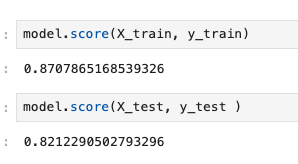
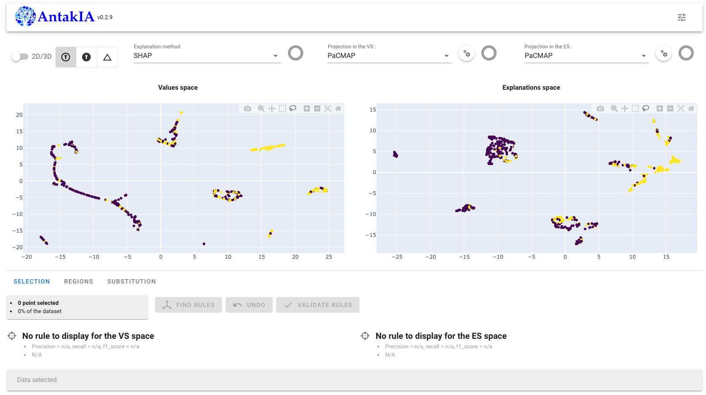
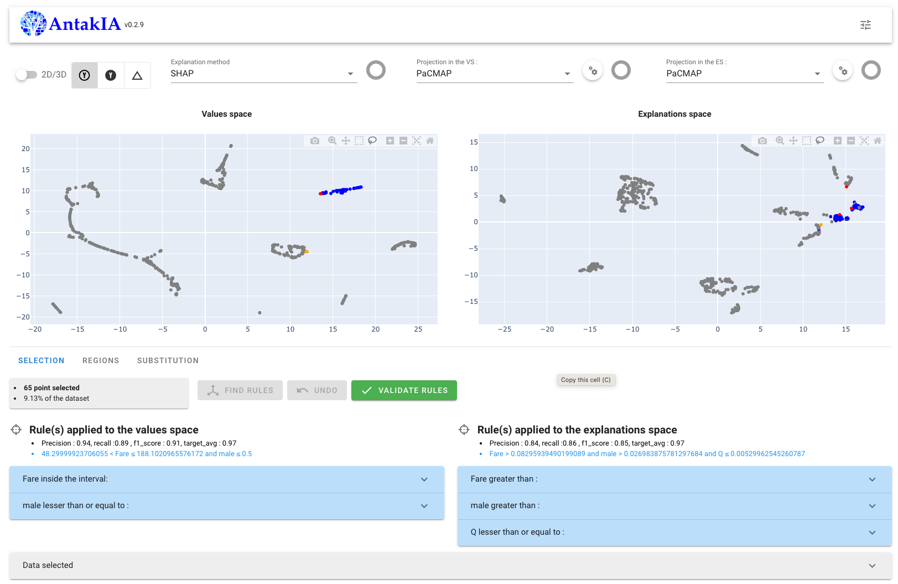
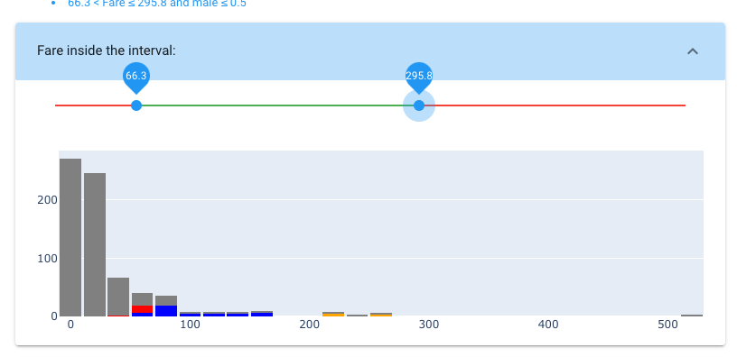
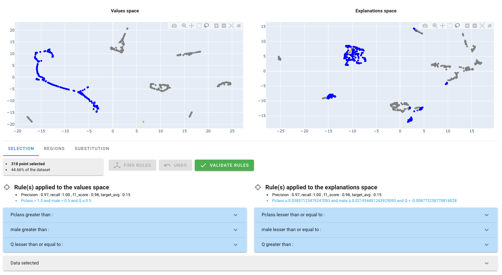
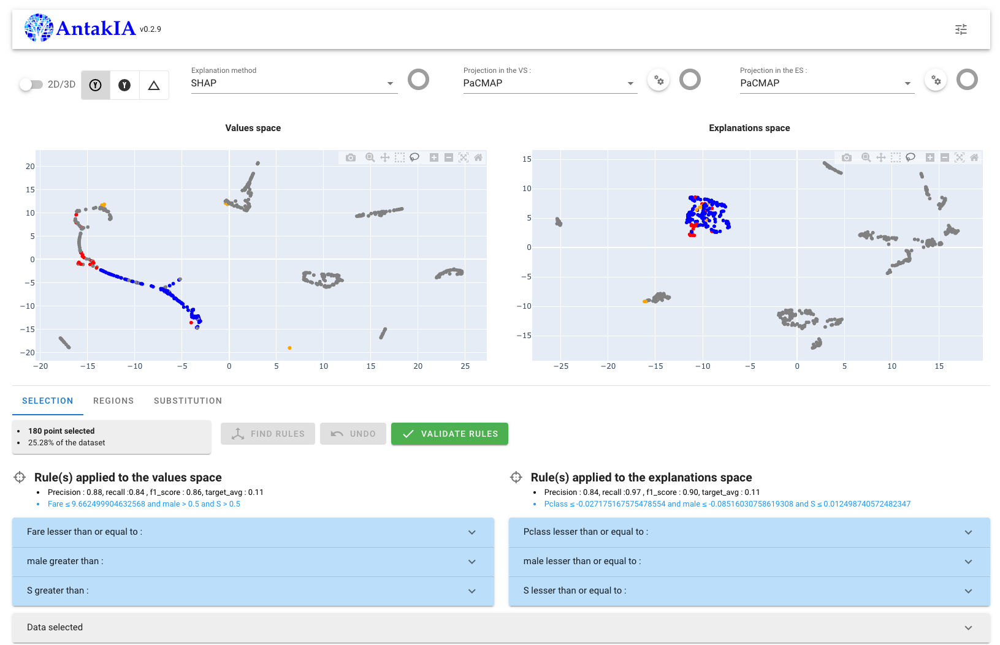
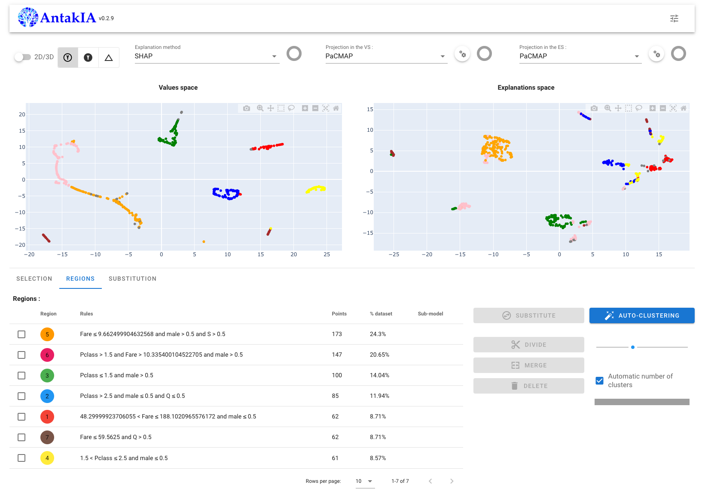
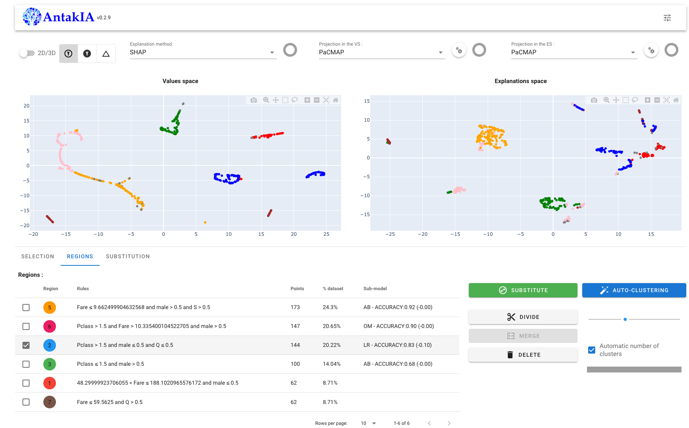
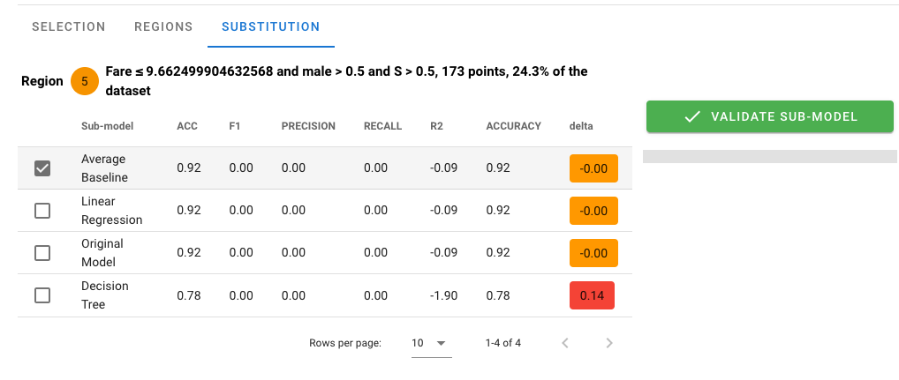
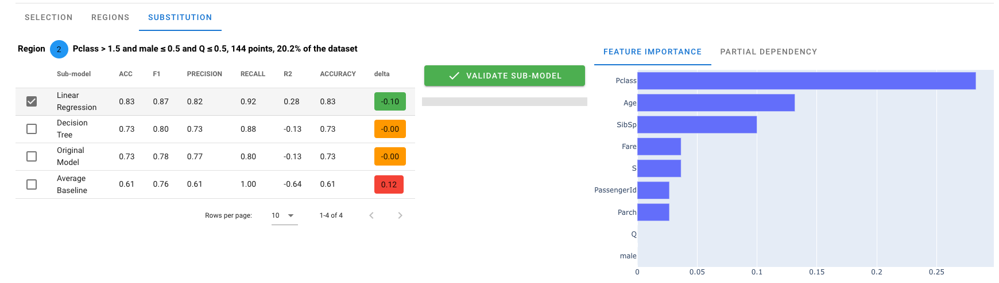

Titanic Tutorial
For this tutorial we explore a well known toy dataset, representing all the passengers of the Titanic. The goal is to predict whether they will survive the collision with the iceberg.
This tuturial presents how to use Antakia with a classification problem
Data Overview
the dataset is composed by 12 columns :
| Variable | Description |
|---|---|
| PassengerId | The passenger number |
| Survived | Target variable |
| Pclass | Travel class |
| Name | Passenger's name |
| Sex | Gender |
| Age | Age in years |
| SibSp | No. of siblings / spouses aboard the Titanic |
| Parch | No. of parents / children aboard the Titanic |
| Ticket | Ticket number |
| Fare | Passenger fare |
| Cabin | Cabin number |
| Embarked | Embarked |
data collection and preparation.
Let's get's the data and prepare it :
To get the data simply run :
import pandas as pd
from antakia.utils.examples import fetch_dataset
dataset = fetch_dataset('titanic', 'train')
Then to prepare it :
dataset['Age'] = dataset['Age'].fillna(dataset['Age'].mean())
dataset['Embarked'] = dataset['Embarked'].fillna('S')
Sex = pd.get_dummies(dataset['Sex'], drop_first=True)
Embarked = pd.get_dummies(dataset['Embarked'], drop_first=True)
dataset = dataset.drop(['Sex', 'Embarked', 'Name', 'Ticket', 'Cabin', 'PassengerId'], axis=1)
dataset = pd.concat([dataset, Sex, Embarked], axis=1)
The preparation include 3 steps :
- fill missing values
- one hot encode categorical variable
- remove columns with high cardinality
Then we shuffle it and splut into test and train, and separate features and target :
dataset = dataset.sample(len(dataset))
limit = int(2000 / 0.8)
dataset = dataset.iloc[:limit]
split_row = int(len(dataset) * 0.8)
df_train = dataset[:split_row]
df_test = dataset[split_row:]
X_train = df_train.drop('Survived', axis=1) # the dataset
y_train = df_train['Survived'] # the target variable
X_test = df_test.drop('Survived', axis=1) # the dataset
y_test = df_test['Survived'] # the target variable
Finally let's train a machine learning model, for example a random forest classifier
from sklearn.ensemble import RandomForestClassifier
parameters = {
'bootstrap': True,
'criterion': 'entropy',
'max_depth': 15,
'max_features': 2,
'min_samples_leaf': 5,
'min_samples_split': 8,
'n_estimators': 10
}
model = RandomForestClassifier(random_state=42, **parameters)
model.fit(X_train, y_train)
let's see how it performs :

Model exploration with Antakia:
let's explore what the model learned and if we can improve it.
to run AntakIA :
from antakia.antakia import AntakIA
atk = AntakIA(
X_train, y_train,
model,
X_test=X_test, y_test=y_test,
)
Note we can force antakia to classification behavior by passing problem_category='classification' as argument :
atk = AntakIA(
X_train, y_train,
model,
X_test=X_test, y_test=y_test,
problem_category='classification'
)
and display the gui :
atk.start_gui()

1. Data exploration:
We can see that 5 different blobs appear, with very different survivor rates:
By selecting the top right one, we can see that 97% of females, that paid between 48$ and 188$ survived

We can edit the rule to adapt it if necessary 
Once we are done, let's validate it
If we select the big blob, we can see that it correspond to several blobs in the Explanation space, 
Let's select one blob in the explanation space
 This new segment is more homogenous, event if we did not capare it perfectly.
By iterating this process we can divide our space into 7 regions : 
2. Region refinement :
If the identified regions are not as good as desired, we can merge, divide or delete some of them.
We can for example merge the region 2 and 4

3. Model substitution
Once the main behaviors have been extracted, we can explore the model in each of these regions:
For example the performance of the trained model on the region 5 is as good as the Average baseline model. inside this region the model did not learn anything more.

For the region 2, the linear regression performs better than the original model :

On the right side we can explore the selected model to understand how the prediction was made.
Conclusion
In this Tutorial we were able to explore a classification model on the titanic dataset. We identified 6 main regions :
- Fare ≤ 9.662499904632568 and male and Embarked = S
- 11% survivorship
- best model : average baseline
- Pclass = 2 or 3 and Fare > 10.335400104522705 and male
- 21% survivorship
- best model : customer model
- Pclass = 2 or 3 and female and not Embarked = Q
- 63% survivorship
- best model : linear regression (Pclass, Age, SibSp)
- Pclass = 1 and male
- 45% survivorship
- best model : average baseline
- 48.29999923706055 < Fare ≤ 188.1020965576172 and female
- 97% survivorship
- best model : average baseline
- Fare ≤ 59.5625 and Embarked = Q
- 36%
- best model : linear regression (male, Parch)
The new model, build with AntakIA, is explanaible and performs better than the original random forest. We managed to improve the performance by 3% on the test set and gained kwnoledge about which passenger did survived or not.